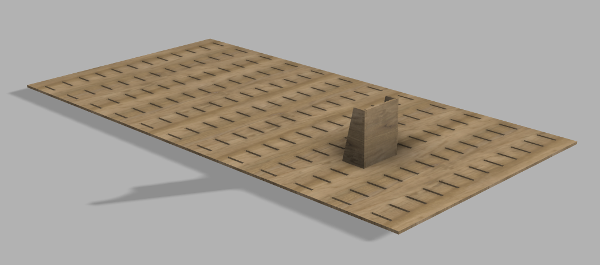

A selection of recent projects exploring interaction, materiality, and digital design.
Parametric Shelf System
An adaptive shelving concept exploring modular design principles.
 View ProjectJellyfish on Roskilde Festival
An interactive light installation reacting to human touch.
 View Project
View Project
Feel You Pictures
A tactile photography experiment blending visual media with sensory interaction.
 View Project
View Project